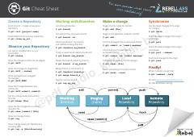

GCGit versiyalarni boshqarish tizimining asosiy buyruqlari qisqacha qo'llanmasi.
Ushbu qo'llanma dasturchilar uchun Git versiyalarni boshqarish tizimining eng asosiy va ko'p ishlatiladigan buyruqlarini qisqacha jamlab beradi. Unda ombor yaratish, tarmoqlar bilan ishlash, o'zgarishlarni saqlash va sinxronizatsiya qilish kabi zarur amallar ko'rsatilgan.